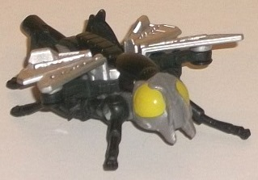
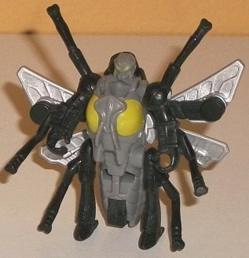
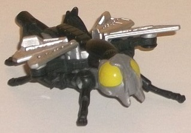
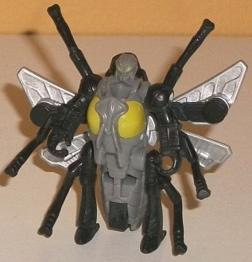
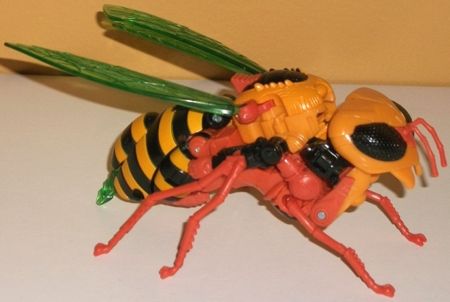
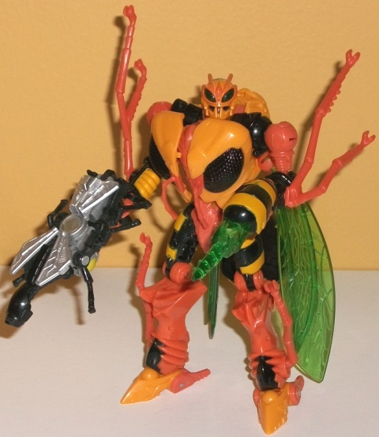

 
Size : Legends partner
Difficulty of Transformation : Very Easy
Color Scheme : Black, gray, silver, and some pea green
Individual Rating : 3.9
Allegiances : Waruder
(NOTE: Because the following two toys are
repaints, the rest of this is not a full-blown review. This mainly covers
any changes made to the two and their color schemes, and merely compares
them to the original versions of these molds. For a review on Generations
Legends Waspinator-- the mold used for Thrasher-- go
here
.
For a review on Generations deluxe Waspinator-- the mold used for Mudfighter--
go
here
.)
 Thrasher
Thrasher


Size
: Legends partner
Difficulty of Transformation
: Very
Easy
Color Scheme
: Black, gray, silver,
and some pea green
Individual Rating
: 3.9
"Waruders" were the bad
guy army from Diaclone-- one of the major precursor lines in Japan to Transformers--
but in this series, every toy had a pilot. Thus, these little Waspinators
are supposed to "pilot" the larger Waspinators, even though the two molds
in question can do no such thing-- this toy can become a weapon for the
Mudfighter Waruder (see below), but that's about the extent to which they
can interact. Still, it's a pretty cool fictional idea to include a bunch
of Waspinator redecoes together. The "Thrasher" pilot here has a main color
of black, but shares his other colors and all his paint apps with the other
pilots in this "troop builder" set-- the main body of the bug is a fairly
straightforward gray, while the wings are painted silver and-- in a bit
of color-- the eyes in both modes are painted a very "bug juice" shade
of pea green. I do like the bit of green meant to liven things up, and
the silver paint contrasts against the black fairly well, but given that
the rest of the colors are monochrome, as a whole I find the Thrasher version
the most boring-looking of the Waruder pilots, since there's no other color
here.
No mold changes have
been made to Thrasher.
 Mudfighter
Mudfighter


Size
: Deluxe (comes in a 4-pack
with
Paralyzer
,
Parasite
,
and
Storm Rider
)
Difficulty of Transformation
: Medium
Color Scheme
: Dull mustard yellow,
burnt orange, black, and transparent forest green
Individual Rating
: 8.2
The Mudfighter variant
of the Waruder army is a double homage to the
"Fox
Kids" repaint of Transmetal Waspinator
, which itself was a bit of an
homage to
BW Buzzsaw
. Additionally, it's in
the color scheme of "Shattered Glass" Waspinator, seen briefly in a club
comic. Mudfighter has colors far more typical of a wasp than the other
three Waruders in this troop builder pack, with a dull yellow, a dull orange,
and black being the main three colors. The yellow and orange both being
dull, however, means that though they complement each other, they don't
contrast against each other enough, and this means that it's mostly up
to the black to keep the contrast between the colors and keep things interesting.
In wasp mode, this isn't much of a problem, due to the black eyes, black
section in the middle of the body, and the black stripes along the abdomen.
However, in robot mode, the black is a bit less prevalent, and a few areas
on the toy overall could've used some paint apps of black or some other
contrast color, such as the mandibles or other details on the bug head
and on the robot knees and feet. Granted, he's not outright boring by any
means, but particularly for a BotCon exclusive I would've expected a few
more paint apps here and there. (The orange lines around the robot eyes
look mighty nice, though.) Thankfully Mudfighter does have one other color,
which is a magnificent shade of transparent green used for his wings, stinger,
and robot eyes. It really contrasts extremely well with the yellow and
orange-- I just wish there was a little MORE of it. Not enough to make
Mudfighter look too much like Waspinator's traditional paint job, of course,
but still a tad more.
No mold changes have
been made to Mudfighter, though like the other Waruders in this 4-pack
the robot heels are loose, which means the mold can't stand as easily as
the original Waspinator version can, and it's not simply a ball joint you
can fix up with floor or nail polish either. A small bummer, but not a
big enough deal where I'd say it ruins the toy by any means.
As a whole, the Mudfighter/Thrasher
set is my least favorite of the Waruder troop builder pack. Thrasher is
outright boring, and Mudfighter-- though having an overall decent color
scheme and being fairly realistic-- could've used a bit more variety in
color, given that two of his major colors are a little closer to each other
than I'd like. That said, it's still an excellent homage to SG Waspinator/Buzzsaw
and he's in a 4-pack, so chances are if you pick up the other Waspinator
redecos you'll be picking this one up too anyways.
Reviews by Beastbot